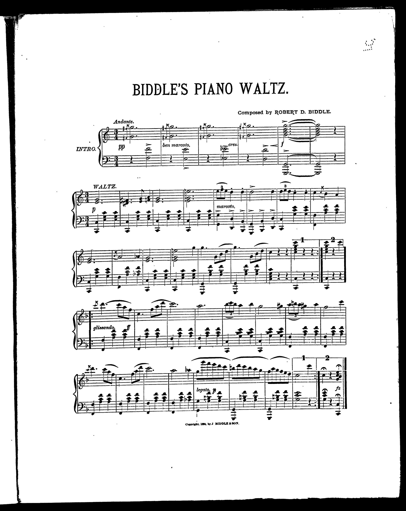

Biddle's Piano Waltz (1884), Library of Congress scan.
Real challenges:
- Faded ink, aged paper
- Ornate typography
- Ornamental intro with grace notes
- Key change mid-piece
We tested every approach on this page.

Biddle's Piano Waltz (1884), Library of Congress scan.
Real challenges:
We tested every approach on this page.
